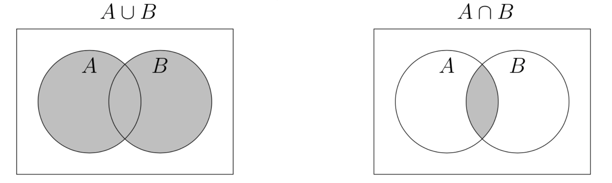

2.2. Data Frames and Set Operations¶
In this section, we will introduce data frames. Topics to be covered include the following.
Introduce basic properties of data frames.
Show that many operations on data frames can be viewed as set operations, including how the union and intersection operations which we performed on sets correspond to outer and inner joins on data frames.
Illustrate simple properties from the algebra of sets in data frames.
Let’s start by considering rosters from three (fictional) statistics classes.
import pandas as pd
from datasets import students
students
---------------------------------------------------------------------------
FileNotFoundError Traceback (most recent call last)
<ipython-input-1-fd87cfdbbe28> in <module>
1 import pandas as pd
----> 2 from datasets import students
3 students
/Volumes/GoogleDrive-112349428810515690974/My Drive/PhD/Teaching/Stat89A_Spring2022/linalg-for-datasci/10_Overview/datasets.py in <module>
5 HERE = "../datasets/"
6
----> 7 circuit_courts = pd.read_csv(os.path.join(HERE, "circuit_courts.csv"))
8
9 discretized_functions = pd.read_csv(os.path.join(HERE, "discretized_functions.csv"))
/usr/local/lib/python3.7/site-packages/pandas/io/parsers.py in read_csv(filepath_or_buffer, sep, delimiter, header, names, index_col, usecols, squeeze, prefix, mangle_dupe_cols, dtype, engine, converters, true_values, false_values, skipinitialspace, skiprows, skipfooter, nrows, na_values, keep_default_na, na_filter, verbose, skip_blank_lines, parse_dates, infer_datetime_format, keep_date_col, date_parser, dayfirst, cache_dates, iterator, chunksize, compression, thousands, decimal, lineterminator, quotechar, quoting, doublequote, escapechar, comment, encoding, dialect, error_bad_lines, warn_bad_lines, delim_whitespace, low_memory, memory_map, float_precision, storage_options)
603 kwds.update(kwds_defaults)
604
--> 605 return _read(filepath_or_buffer, kwds)
606
607
/usr/local/lib/python3.7/site-packages/pandas/io/parsers.py in _read(filepath_or_buffer, kwds)
455
456 # Create the parser.
--> 457 parser = TextFileReader(filepath_or_buffer, **kwds)
458
459 if chunksize or iterator:
/usr/local/lib/python3.7/site-packages/pandas/io/parsers.py in __init__(self, f, engine, **kwds)
812 self.options["has_index_names"] = kwds["has_index_names"]
813
--> 814 self._engine = self._make_engine(self.engine)
815
816 def close(self):
/usr/local/lib/python3.7/site-packages/pandas/io/parsers.py in _make_engine(self, engine)
1043 )
1044 # error: Too many arguments for "ParserBase"
-> 1045 return mapping[engine](self.f, **self.options) # type: ignore[call-arg]
1046
1047 def _failover_to_python(self):
/usr/local/lib/python3.7/site-packages/pandas/io/parsers.py in __init__(self, src, **kwds)
1860
1861 # open handles
-> 1862 self._open_handles(src, kwds)
1863 assert self.handles is not None
1864 for key in ("storage_options", "encoding", "memory_map", "compression"):
/usr/local/lib/python3.7/site-packages/pandas/io/parsers.py in _open_handles(self, src, kwds)
1361 compression=kwds.get("compression", None),
1362 memory_map=kwds.get("memory_map", False),
-> 1363 storage_options=kwds.get("storage_options", None),
1364 )
1365
/usr/local/lib/python3.7/site-packages/pandas/io/common.py in get_handle(path_or_buf, mode, encoding, compression, memory_map, is_text, errors, storage_options)
642 encoding=ioargs.encoding,
643 errors=errors,
--> 644 newline="",
645 )
646 else:
FileNotFoundError: [Errno 2] No such file or directory: '../datasets/circuit_courts.csv'
2.2.1. Basic properties of a data frame¶
If the data frame is small, we can just print it out and look at the entire thing. However, it is often too big to do this, in which case we want to figure out basic properties of the data frame. Here are examples of how to do this.
We can determine the shape (number of rows and columns) of a data frame using the .shape command:
students.shape
---------------------------------------------------------------------------
NameError Traceback (most recent call last)
<ipython-input-2-1ae63f913424> in <module>
----> 1 students.shape
NameError: name 'students' is not defined
Here, we see that the students data frame has 41 rows and 5 columns.
In many cases, the columns of a data frame will have meaningful names. We can inspect these names using the .columns command:
students.columns
---------------------------------------------------------------------------
NameError Traceback (most recent call last)
<ipython-input-3-cc6d9b45cc1d> in <module>
----> 1 students.columns
NameError: name 'students' is not defined
We can also inspect the first few rows of a data frame by using the .head() command:
students.head()
---------------------------------------------------------------------------
NameError Traceback (most recent call last)
<ipython-input-4-29959f1cb694> in <module>
----> 1 students.head()
NameError: name 'students' is not defined
Alternatively, we can also inspect the last few rows of a data frame by using the .tail() command:
students.tail()
---------------------------------------------------------------------------
NameError Traceback (most recent call last)
<ipython-input-5-5ffa3888d501> in <module>
----> 1 students.tail()
NameError: name 'students' is not defined
If we want to access a particular column of a data frame, we can do so using brackets [] and the column name of interest. (Note: we can also select a single column using the command students['Major'], however, this will not return a data frame back, but another object called a Series. We use the double brackets to make sure we get a data frame, which is easier to work with.)
students[['Major']].head()
---------------------------------------------------------------------------
NameError Traceback (most recent call last)
<ipython-input-6-8201ca83d38d> in <module>
----> 1 students[['Major']].head()
NameError: name 'students' is not defined
We can use the same method to select a subset of columns.
students[['Major', 'Year']].head()
---------------------------------------------------------------------------
NameError Traceback (most recent call last)
<ipython-input-7-b56b33a352cb> in <module>
----> 1 students[['Major', 'Year']].head()
NameError: name 'students' is not defined
2.2.2. Select and group by¶
When we have a dataframe, it is common to determine basic properties of the data. For example, we might want to find out how many students there are from each major. We can do this with basic select and count operations, but we have to be careful, e.g., not to double count. Let’s illustrate this.
One of the most basic operations we can do on a database is to select certain rows. For example, we can separate out each class as its own table.
stat101 = students[students['Class'] == 'stat101']
stat102 = students[students['Class'] == 'stat102']
stat103 = students[students['Class'] == 'stat103']
---------------------------------------------------------------------------
NameError Traceback (most recent call last)
<ipython-input-8-ea6e062ef7d4> in <module>
----> 1 stat101 = students[students['Class'] == 'stat101']
2 stat102 = students[students['Class'] == 'stat102']
3 stat103 = students[students['Class'] == 'stat103']
NameError: name 'students' is not defined
For stat101, we have the following.
stat101.head()
---------------------------------------------------------------------------
NameError Traceback (most recent call last)
<ipython-input-9-687429153e52> in <module>
----> 1 stat101.head()
NameError: name 'stat101' is not defined
Similarly, for stat102, we have the following.
stat102.head()
---------------------------------------------------------------------------
NameError Traceback (most recent call last)
<ipython-input-10-b5c80eec6d24> in <module>
----> 1 stat102.head()
NameError: name 'stat102' is not defined
Now suppose we wanted to find out how many students there are from each major.
We could try the following.
students['Major'].value_counts()
---------------------------------------------------------------------------
NameError Traceback (most recent call last)
<ipython-input-11-747b872b845f> in <module>
----> 1 students['Major'].value_counts()
NameError: name 'students' is not defined
However, if we look at the whole table, we realize that this doesn’t give us the correct answer.
The reason is that there are some students in multiple classes that are getting overcounted; the .value_counts() function simply counts the total number of rows within each major.
Instead, we should first use the ‘group by’ operation. This operation partitions the set of students into non-overlapping subsets. In our case, we get a different subset for each distinct major; since each student only has one major, these subsets will of course be non-overlapping. The code below first groups the rows by major and then, within each major, counts the number of unique student IDs.
students.groupby('Major')['StudentID'].nunique()
---------------------------------------------------------------------------
NameError Traceback (most recent call last)
<ipython-input-12-fe7f11c3bd00> in <module>
----> 1 students.groupby('Major')['StudentID'].nunique()
NameError: name 'students' is not defined
Here, the set of students has been partitioned Similarly, we can find the number of students in each year (Freshman, Sophomore, Junior, Senior) with the following:
students.groupby('Year')['StudentID'].nunique()
---------------------------------------------------------------------------
NameError Traceback (most recent call last)
<ipython-input-13-6c251f055b1e> in <module>
----> 1 students.groupby('Year')['StudentID'].nunique()
NameError: name 'students' is not defined
2.2.3. Merge and set operations¶
It is often fruitful to think of data frames as representing sets, where each row is an element, and where we can perform basic operations from the algebra of sets covered in class.
Two of the most important operations we can do with sets are to take unions and intersections. The union of two sets \(A\) and \(B\) is the new set \(A \cup B = \{x \mid x\in A\text{ or } x\in B\}\), or, in words, the union is the set of all elements which are either in \(A\) or in \(B\). Notice that taking the union of \(A\) and \(B\) always give us a set which is at least as big as both \(A\) and \(B\). The intersection of \(A\) and \(B\) is the set \(A\cap B = \{x\mid x\in A \text{ and } x\in B\}\), in words, it’s the set of all elements which are in both \(A\) and \(B\). Notice that this will generally give us a smaller set that both \(A\) and \(B\). Below we illustrate the union and intersection using Venn diagrams.

In the language of database operations, unions are called outer joins, and intersections are called inner joins. It is easiest to see how this works through a few examples. Let us think of each of the classes (stat101, stat102 and stat103) as sets indexed by the column StudentID.
First, let’s print out the Student IDs of students in stat101:
stat101[['StudentID']]
---------------------------------------------------------------------------
NameError Traceback (most recent call last)
<ipython-input-14-7fc7fb3cdc97> in <module>
----> 1 stat101[['StudentID']]
NameError: name 'stat101' is not defined
and stat102:
stat102[['StudentID']]
---------------------------------------------------------------------------
NameError Traceback (most recent call last)
<ipython-input-15-1f58ed9c4df6> in <module>
----> 1 stat102[['StudentID']]
NameError: name 'stat102' is not defined
Now, let’s find all the students in stat101 \(\cup\) stat102 with an outer join:
stat101_union_102 = stat101.merge(stat102, how='outer', on='StudentID')
stat101_union_102[['StudentID']]
---------------------------------------------------------------------------
NameError Traceback (most recent call last)
<ipython-input-16-155b9f95ead0> in <module>
----> 1 stat101_union_102 = stat101.merge(stat102, how='outer', on='StudentID')
2 stat101_union_102[['StudentID']]
NameError: name 'stat101' is not defined
This code merges the tables stat101 and stat102, by taking every student that is in either one of these courses, and gives us a new (bigger) table back.
We can likewise find the set stat101 \(\cap\) stat102 with the following inner join:
stat101_intersection_102 = stat101.merge(stat102, how='inner', on='StudentID')
stat101_intersection_102[['StudentID']]
---------------------------------------------------------------------------
NameError Traceback (most recent call last)
<ipython-input-17-b0bcd6631cd7> in <module>
----> 1 stat101_intersection_102 = stat101.merge(stat102, how='inner', on='StudentID')
2 stat101_intersection_102[['StudentID']]
NameError: name 'stat101' is not defined
Note that to specify between an inner and outer join (i.e. an intersection or a union) using the Pandas merge function, we just need to use the option how='inner' or how='outer'. The option on='StudentID' tells Pandas that we’re using the column StudentID as the index set that we’re taking the union/intersection on.
2.2.4. Set complements (with data frames)¶
Another one of the basic operations one can do with sets is to take complements. To properly define the complement of a set \(A\), we need to have a larger set \(X\) for which \(A\subseteq X\). Sometimes, this is simply all of the rows in the data frame. Then we can define \(A^c = \{x\in X : x\not\in A\}\). We can use the select operations we learned earlier to calculate complements.
For example, suppose we wanted to find stat\(101^c\). To do this, we use the ‘isin’ function from numpy, which returns an array of True and False values describing whether each element in the first array is in the second array. For example, numpy.isin([1,2,3], [1,2]) would return [True, True, False], since 1 and 2 are in [1,2] but 3 is not. We also use the function numpy.logical_not, which finds the logical negation of each element in a boolean array. For example, numpy.logical_not([True, True, False]) = [False, False, True].
import numpy
stat101_complement = students[numpy.logical_not(numpy.isin(students['StudentID'].values, stat101['StudentID'].values))]
stat101_complement
---------------------------------------------------------------------------
NameError Traceback (most recent call last)
<ipython-input-18-0f6d69a9efd6> in <module>
1 import numpy
2
----> 3 stat101_complement = students[numpy.logical_not(numpy.isin(students['StudentID'].values, stat101['StudentID'].values))]
4 stat101_complement
NameError: name 'students' is not defined
Similarly, we can use the below code to find the complement of the set freshman of all freshman students.
freshman = students[students['Year'] == 'Freshman']
freshman_complement = students[numpy.logical_not(numpy.isin(students['StudentID'].values, freshman['StudentID'].values))]
freshman_complement
---------------------------------------------------------------------------
NameError Traceback (most recent call last)
<ipython-input-19-acfd53d9f423> in <module>
----> 1 freshman = students[students['Year'] == 'Freshman']
2 freshman_complement = students[numpy.logical_not(numpy.isin(students['StudentID'].values, freshman['StudentID'].values))]
3 freshman_complement
NameError: name 'students' is not defined
2.2.5. Set associativity (with data frames)¶
Now that we’ve seen how to take unions and intersections, we can illustrate other properties, starting with the associative property.
Recall that the associative property (of unions) states that for sets \(A,B\) and \(C\), we have \((A\cup B)\cup C = A \cup (B\cup B)\); that is, it doesn’t matter in which order we take unions.
In the cells below, we use outer joins to verify this property, by showing that (stat101 \(\cup\) stat102) \(\cup\) stat103 = stat101 \(\cup\) (stat102 \(\cup\) stat103).
First, we compute stat 101 \(\cup\) stat 102, by performing an outer join.
stat101_union_102 = stat101.merge(stat102, how='outer', on='StudentID')
stat101_union_102[['StudentID']]
---------------------------------------------------------------------------
NameError Traceback (most recent call last)
<ipython-input-20-155b9f95ead0> in <module>
----> 1 stat101_union_102 = stat101.merge(stat102, how='outer', on='StudentID')
2 stat101_union_102[['StudentID']]
NameError: name 'stat101' is not defined
Next, we perform another outer join with stat103 to compute (stat101 \(\cup\) stat102) \(\cup\) stat103.
stat101u102_union_103 = stat101_union_102.merge(stat103, how='outer', on='StudentID')
stat101u102_union_103[['StudentID']]
---------------------------------------------------------------------------
NameError Traceback (most recent call last)
<ipython-input-21-8a7335c5c69f> in <module>
----> 1 stat101u102_union_103 = stat101_union_102.merge(stat103, how='outer', on='StudentID')
2 stat101u102_union_103[['StudentID']]
NameError: name 'stat101_union_102' is not defined
Next, we move on to computing the right-hand side. We start with (stat102 \(\cup\) stat103):
stat102_union_103 = stat102.merge(stat103, how='outer', on='StudentID')
stat102_union_103[['StudentID']]
---------------------------------------------------------------------------
NameError Traceback (most recent call last)
<ipython-input-22-9f63c7c06034> in <module>
----> 1 stat102_union_103 = stat102.merge(stat103, how='outer', on='StudentID')
2 stat102_union_103[['StudentID']]
NameError: name 'stat102' is not defined
And finally, we take an outer join with stat101 to find stat101 \(\cup\) (stat102 \(\cup\) stat103).
stat102u103_union_101 = stat102_union_103.merge(stat101, how='outer', on='StudentID')
stat102u103_union_101[['StudentID']]
---------------------------------------------------------------------------
NameError Traceback (most recent call last)
<ipython-input-23-9b96ce898318> in <module>
----> 1 stat102u103_union_101 = stat102_union_103.merge(stat101, how='outer', on='StudentID')
2 stat102u103_union_101[['StudentID']]
NameError: name 'stat102_union_103' is not defined
As we can see visually, the sets stat101u102_union_103 and stat102u103_union_101 are indeed equal! We can also check this using code:
set(stat101u102_union_103['StudentID'].values) == set(stat102u103_union_101['StudentID'].values)
---------------------------------------------------------------------------
NameError Traceback (most recent call last)
<ipython-input-24-cbea6f141420> in <module>
----> 1 set(stat101u102_union_103['StudentID'].values) == set(stat102u103_union_101['StudentID'].values)
NameError: name 'stat101u102_union_103' is not defined
2.2.6. Set distributivity (with data frames)¶
The next property which we will verify is the distributive property of intersections over unions (there is also a distributive property of unions over intersection, which you will verify in the homework). This distribution property states that for sets \(A,B\) and \(C\), we have that \(A\cap(B\cup C) = (A\cap B) \cup (A\cap C)\).
Here, we will demonstrate this property by showing that stat101 \(\cap\) (stat102 \(\cup\) stat103) = (stat101 \(\cap\) stat102) \(\cup\) (stat101 \(\cap\) stat103). Noe that to do this, we need to use both inner and outer joins, to compute intersections and unions, respectively.
Let’s start by computing the left-hand side, first by computing (stat102 \(\cup\) stat103) with an outer join, and then taking an inner join with stat101.
stat102_union_103 = stat102.merge(stat103, how='outer', on='StudentID')
stat101_intersection_102u103 = stat101.merge(stat102_union_103, how='inner', on='StudentID')
stat101_intersection_102u103[['StudentID']]
---------------------------------------------------------------------------
NameError Traceback (most recent call last)
<ipython-input-25-1afbd58fac82> in <module>
----> 1 stat102_union_103 = stat102.merge(stat103, how='outer', on='StudentID')
2 stat101_intersection_102u103 = stat101.merge(stat102_union_103, how='inner', on='StudentID')
3 stat101_intersection_102u103[['StudentID']]
NameError: name 'stat102' is not defined
Next, let’s compute the right-hand side. We do this by taking two inner joins to find the sets (stat101 \(\cap\) stat102) and (stat101 \(\cap\) stat103), and then taking an outer join to find the union of them.
stat101_intersection_102 = stat101.merge(stat102, how='inner', on='StudentID')
stat101_intersection_103 = stat101.merge(stat103, how='inner', on='StudentID')
stat101n102_union_101n103 = stat101_intersection_102.merge(stat101_intersection_103, how='outer', on='StudentID')
stat101n102_union_101n103[['StudentID']]
---------------------------------------------------------------------------
NameError Traceback (most recent call last)
<ipython-input-26-4c2f7617807b> in <module>
----> 1 stat101_intersection_102 = stat101.merge(stat102, how='inner', on='StudentID')
2 stat101_intersection_103 = stat101.merge(stat103, how='inner', on='StudentID')
3 stat101n102_union_101n103 = stat101_intersection_102.merge(stat101_intersection_103, how='outer', on='StudentID')
4 stat101n102_union_101n103[['StudentID']]
NameError: name 'stat101' is not defined
As we can see visually, the sets stat101_intersection_102u103 and stat101n102_union_101n103 are indeed equal. However, we can again check this with code.
set(stat101_intersection_102u103['StudentID'].values) == set(stat101n102_union_101n103['StudentID'].values)
---------------------------------------------------------------------------
NameError Traceback (most recent call last)
<ipython-input-27-d7721332364e> in <module>
----> 1 set(stat101_intersection_102u103['StudentID'].values) == set(stat101n102_union_101n103['StudentID'].values)
NameError: name 'stat101_intersection_102u103' is not defined
2.2.7. Set idempotence (with data frames)¶
In Section 2.1 on sets, we saw that the union operation was idempotent, meaning that for sets \(A\) and \(B\), we have that \(A\cup B = (A\cup B) \cup B\). Another way to formalize this is to define the operation \(G\), which takes in a set \(A\) and returns the set \(A\cup B\), namely: \(G(A) = A \cup B\). Then we can equivalently state that for any set \(A\), \(G(G(A)) = G(A)\). Later, when we discuss functions, we will see that this means that \(G\) is an identity function on its image (don’t worry about this terminology for now). Here we will verify this idempotence property for unions using data frames and outer joins.
For this demonstration, we’ll use the sets juniors101 (juniors in the class stat 101) and seniors102 (seniors in the class stat 102), which we define below.
juniors101 = stat101[stat101['Year'] == 'Junior']
seniors102 = stat102[stat102['Year'] == 'Senior']
---------------------------------------------------------------------------
NameError Traceback (most recent call last)
<ipython-input-28-aa1b87857b69> in <module>
----> 1 juniors101 = stat101[stat101['Year'] == 'Junior']
2 seniors102 = stat102[stat102['Year'] == 'Senior']
NameError: name 'stat101' is not defined
Let’s first use an outer join to compute juniors101 \(\cup\) seniors102.
juniors101_u_seniors102 = juniors101.merge(seniors102, how='outer', on='StudentID')
juniors101_u_seniors102[['StudentID']]
---------------------------------------------------------------------------
NameError Traceback (most recent call last)
<ipython-input-29-754038101d11> in <module>
----> 1 juniors101_u_seniors102 = juniors101.merge(seniors102, how='outer', on='StudentID')
2 juniors101_u_seniors102[['StudentID']]
NameError: name 'juniors101' is not defined
Next, let’s verify the idempotence property of the union with seniors, namely that juniors101 \(\cup\) seniors102 = (juniors101 \(\cup\) seniors102) \(\cup\) seniors102:
juniors101_u_seniors102_u_seniors102 = juniors101_u_seniors102.merge(seniors102, how='outer', on='StudentID')
juniors101_u_seniors102_u_seniors102[['StudentID']]
---------------------------------------------------------------------------
NameError Traceback (most recent call last)
<ipython-input-30-878e630cc73c> in <module>
----> 1 juniors101_u_seniors102_u_seniors102 = juniors101_u_seniors102.merge(seniors102, how='outer', on='StudentID')
2 juniors101_u_seniors102_u_seniors102[['StudentID']]
NameError: name 'juniors101_u_seniors102' is not defined
As we can see visually, the two sets consist of the same student ID are the same. We can also verify this using code:
set(juniors101_u_seniors102_u_seniors102['StudentID'].values) == set(juniors101_u_seniors102['StudentID'].values)
---------------------------------------------------------------------------
NameError Traceback (most recent call last)
<ipython-input-31-717d3607458b> in <module>
----> 1 set(juniors101_u_seniors102_u_seniors102['StudentID'].values) == set(juniors101_u_seniors102['StudentID'].values)
NameError: name 'juniors101_u_seniors102_u_seniors102' is not defined
In the homework, we will see that a similar idempotence property also holds for intersections.